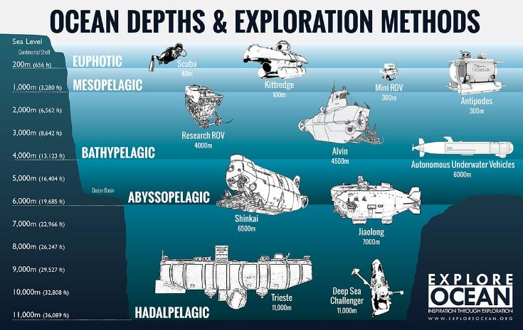

Where is Ocean Exploration Headed?
With developing technologies, we have more possibilities for ocean exploration than ever. In fact, we could map the entire ocean floor for three billion dollars, which is the average cost of a Mars mission. The key is dedicating the time and resources.Exploration missions like James Cameron’s dive to the Marianas Trench must be higher on our priority list to really make new discoveries. Drones are also helping us make headway into ocean exploration, as they have in space. Other technology for further exploration includes fluorescence-detecting cameras to find glowing fish, swarms of mini robots finding water information and lost objects or dangers to the ocean and soft grippers for gently collecting ocean specimen.It will, however, take quite a bit of time, dedication, and resources to really understand the oceans that make up a major part of our world. More importantly, it will take a lot of scientists and researchers working together to achieve one common goal, but it may be possible that one day we will no longer have explored more of space than of the ocean.
Why Don’t We Explore the Ocean?
For starters, there’s a lot of it to cover, and even though we’ve had the time and likely resources to do so, it would be incredibly expensive. Only about 0.05 percent of the ocean has been mapped with the highest resolution of sonar imaging. Why don’t we just do the rest?Because it’s not that simple. Even more difficult to understand is the fact that we can’t get down there to explore with our eyes. In some places, the pressure of the ocean and gravity equals that of 50 jumbo jets resting right on top of you. And that’s before you even consider the fact that at great depths there is absolutely no visibility. It’s not just a matter of presenting a light source; it’s also about how far said light can stretch, which at the bottom of the ocean is not very far.That doesn’t necessarily mean it’s not happening. Already scientists and researchers are planning to map and explore the far reaches of the ocean floor. Thanks to modern technology the process can be much more efficient and accurate. We may even be able to locate valuable resources that can be retrieved for use back on the surface, such as copper, nickel, and cobalt.
Why Is The Exploration Of Oceans Important?
Oceans occupy 70% of the total surface area of the Earth and over 90% of the living space on the planet. In fact, all species of terrestrial fauna are exceptions in the world of oceanic creatures. Oceans influence climate and weather phenomena on land, and a large number of oceanic flora and fauna are important sources of food for humans. Oceans allow navigation between continents and countries of the world, and about half of the population of the world live within the coastal zone. Understanding the world’s oceans is thus extremely important for our benefit. The changes in the Earth’s oceans will directly affect our life on land, and it is thus necessary for us to detect such changes at the earliest.Besides increasing our knowledge of the oceans for our safety and economic gains, exploration of the ocean floor will also satisfy the curious human mind and our thirst for knowledge of the unknown.
"MH 370 and the case for oceanic observation"
The search for missing flight MH370 isn’t over in the Southern Indian Ocean – it’s just going deeper in an attempt to cover the ocean floor over a much wider area.Much of the search effort so far has been carried out by the autonomous unmanned underwater vehicle Bluefin-21 on board the Australian Navy vessel Ocean Shield.But the Australian Transport Safety Bureau (ATSB) this week said Bluefin-21 had completed its search over 850 square kilometres of ocean floor and had found no debris from the Malaysian Airlines aircraft.Given the amount of time and effort spent on scouring such an area (not much bigger than the size of metropolitan Sydney) it will be virtually impossible to scale up an underwater search over the entire Indian Ocean.